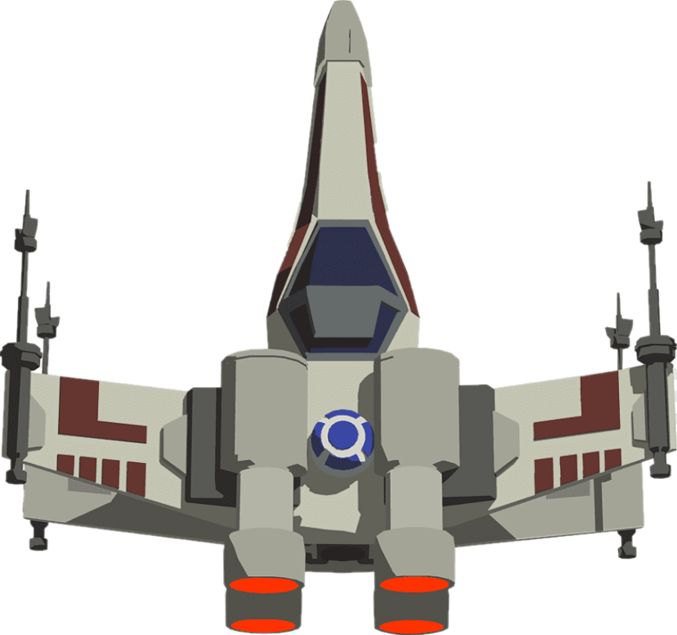
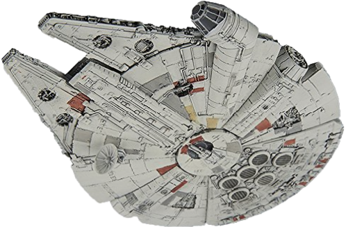
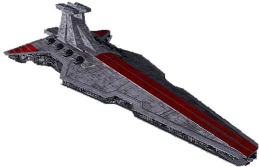
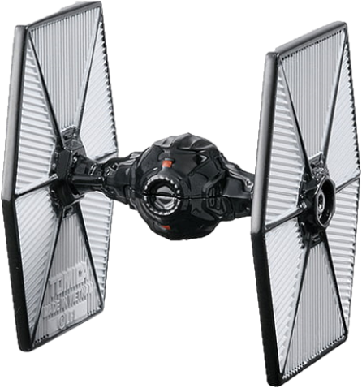
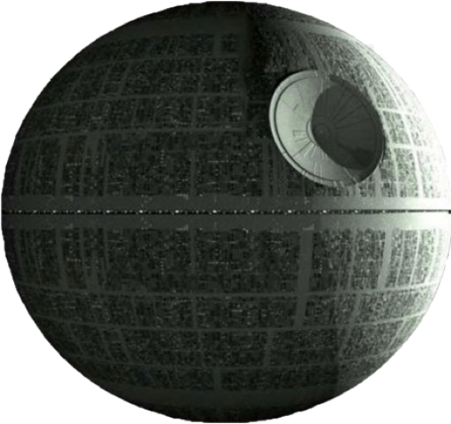
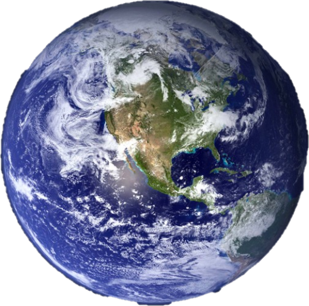
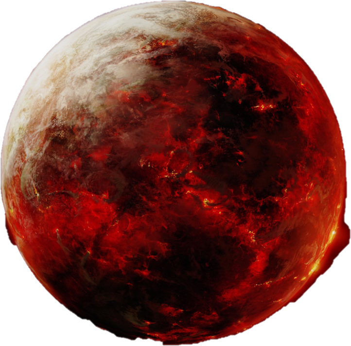
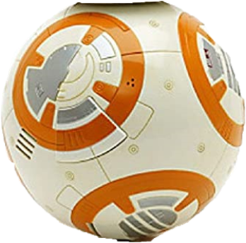

Control del volumen:
Gana el primero en conseguir 5 puntos
Para moverte Izquierda o Derecha:
Utilice las flechas <= izq y der => o A y B
0-0
Pulsa spacio para comenzar
Elija nivel de dificultad:
APRENDIZ
CABALLERO JEDI
MAESTRO JEDI
GRAN MAESTRO JEDI
Elija la camara
Lejano
Normal
Cerca
Muy Cerca
Elija la nave:
X-WING 
Halcón Milenario 
Destructor 
Caza TIE 
Elija que cancion desea escuchar:
StarWars
Marcha Imperial
StarWars Cantina
Sin Musica
Skins para la esfera:
Estrella de la Muerte 
Planeta Tierra 
Planeta Mustafar 
Cuerpo de Bb8 